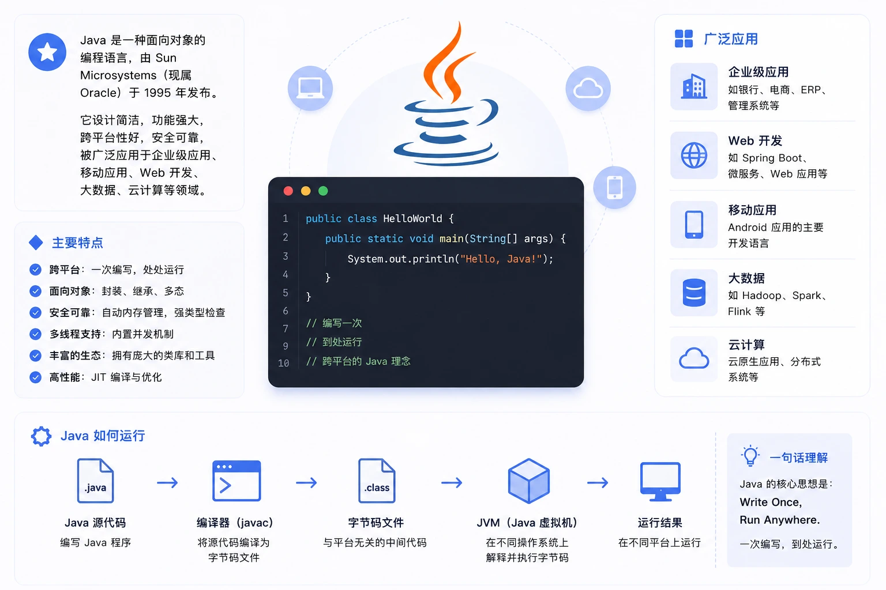

Java 概要
Java は、Sun Microsystems 社が 1995 年 5 月に発表した、Java オブジェクト指向プログラミング言語と Java プラットフォームの総称です。James Gosling と同僚たちによって共同開発され、1995 年に正式にリリースされました。
その後、Sun 社は Oracle（オラクル）社に買収され、Java もそれに伴って Oracle 社の製品となりました。
Java は 3 つの体系に分けられます：
- Java SE（J2SE）（Java 2 Platform Standard Edition、Java プラットフォーム標準版）
- Java EE（J2EE）（Java 2 Platform, Enterprise Edition、Java プラットフォーム企業版）
- Java ME（J2ME）（Java 2 Platform Micro Edition、Java プラットフォームマイクロ版）
2005 年 6 月、JavaOne カンファレンスが開催され、SUN 社は Java SE 6 を公開しました。このとき、Java の各バージョンは名称が変更され、その中の数字「2」を廃止しました。J2EE は Java EE に、J2SE は Java SE に、J2ME は Java ME に改名されました。

主な特徴
Java 言語はシンプルです：
Java 言語の構文は C 言語や C++ 言語に非常に近いため、ほとんどのプログラマーが簡単に学習し使用できます。一方、Java は C++ でほとんど使われず、理解しにくく、混乱を招く特性（演算子オーバーロード、多重継承、自動的な型キャストなど）を廃しました。特に、Java 言語はポインタを使用せず、参照を使用します。また、メモリ空間の自動割り当てと回収を提供するため、プログラマーはメモリ管理を心配する必要がありません。
Java 言語はオブジェクト指向です：
Java 言語はクラス、インターフェース、継承などのオブジェクト指向の特性を提供します。簡単にするため、クラス間の単一継承のみをサポートしますが、インターフェース間の多重継承はサポートし、クラスとインターフェース間の実装メカニズム（キーワードは implements）もサポートします。Java 言語は動的バインディングを全面的にサポートしますが、C++ 言語は仮想関数に対してのみ動的バインディングを使用します。要するに、Java 言語は純粋なオブジェクト指向プログラミング言語です。
Java 言語は分散型です：
Java 言語はインターネットアプリケーションの開発をサポートします。基本的な Java アプリケーションプログラミングインターフェースには、ネットワークアプリケーションプログラミングインターフェース（java.net）があります。これは、URL、URLConnection、Socket、ServerSocket などを含むネットワークアプリケーションプログラミング用のクラスライブラリを提供します。Java の RMI（リモートメソッドアクティベーション）メカニズムも、分散アプリケーションを開発するための重要な手段です。
- Java 言語は堅牢です：
Java の強い型付けメカニズム、例外処理、ガベージの自動収集などは、Java プログラムの堅牢性の重要な保証です。ポインタを廃したことは Java の賢明な選択です。Java のセキュリティチェックメカニズムは、Java をさらに堅牢にしています。
Java 言語は安全です：
Java は通常、ネットワーク環境で使用されるため、Java は悪意のあるコードの攻撃を防ぐためのセキュリティメカニズムを提供します。Java 言語が備える多くのセキュリティ特性に加えて、Java はネットワークを介してダウンロードされたクラスに対するセキュリティ防御メカニズム（クラス ClassLoader）を持っています。例えば、ローカルの同名クラスに置き換えられないように異なる名前空間を割り当てる、バイトコード検査などです。また、Java アプリケーションがセキュリティ監視役を設定できるように、セキュリティ管理メカニズム（クラス SecurityManager）を提供します。
Java 言語はアーキテクチャ中立です：
Java プログラム（拡張子が java のファイル）は、Java プラットフォーム上でアーキテクチャ中立なバイトコード形式（拡張子が class のファイル）にコンパイルされ、その後、この Java プラットフォームを実装した任意のシステムで実行できます。この方法は、異種のネットワーク環境やソフトウェアの配布に適しています。
Java 言語は移植可能です：
この移植性はアーキテクチャ中立性に由来します。さらに、Java は各基本データ型の長さを厳密に規定しています。Java システム自体も非常に移植性が高く、Java コンパイラは Java で実装されており、Java の実行環境は ANSI C で実装されています。
Java 言語はインタープリタ型です：
前述のように、Java プログラムは Java プラットフォーム上でバイトコード形式にコンパイルされ、その後、この Java プラットフォームを実装した任意のシステムで実行できます。実行時には、Java プラットフォーム内の Java インタープリタがこれらのバイトコードを解釈して実行します。実行中に必要なクラスは、リンク段階で実行環境に読み込まれます。
Java は高性能です：
解釈型の高級スクリプト言語と比較すると、Java は確かに高性能です。実際、Java の実行速度は JIT（Just-In-Time）コンパイラ技術の発展に伴い、ますます C++ に近づいています。
Java 言語はマルチスレッドです：
Java 言語では、スレッドは特別なオブジェクトであり、Thread クラスまたはそのサブクラス（孫クラス）によって作成される必要があります。通常、スレッドを作成するには 2 つの方法があります。1 つは、Thread(Runnable) という形のコンストラクタを使用して、Runnable インターフェースを実装したオブジェクトをスレッドにラップする方法です。もう 1 つは、Thread クラスからサブクラスを派生させて run メソッドをオーバーライドし、そのサブクラスから作成したオブジェクトをスレッドとする方法です。注目すべき点は、Thread クラスはすでに Runnable インターフェースを実装しているため、どのスレッドにも run メソッドがあり、run メソッドにはスレッドが実行するコードが含まれています。スレッドのアクティビティは一連のメソッドによって制御されます。Java 言語は複数のスレッドの同時実行をサポートし、マルチスレッド間の同期メカニズム（キーワードは synchronized）を提供します。
Java 言語は動的です：
Java 言語の設計目標の 1 つは、動的に変化する環境に適応することです。Java プログラムに必要なクラスは、実行環境に動的にロードでき、ネットワークを介して必要なクラスをロードすることもできます。これはソフトウェアのアップグレードにも有利です。さらに、Java のクラスは実行時の表現を持ち、実行時の型チェックを行うことができます。
発展の歴史
- 1995 年 5 月 23 日、Java 言語が誕生しました。
- 1996 年 1 月、最初の JDK（JDK 1.0）が誕生しました。
- 1996 年 4 月、10 の主要なオペレーティングシステムベンダーが、自社製品に Java 技術を組み込むことを表明しました。
- 1996 年 9 月、約 8 万 3000 の Web ページが Java 技術を使用して制作されました。
- 1997 年 2 月 18 日、JDK 1.1 がリリースされました。
- 1997 年 4 月 2 日、JavaOne カンファレンスが開催され、参加者は 1 万人を超え、当時の世界的な同種会議の規模の記録を樹立しました。
- 1997 年 9 月、JavaDeveloperConnection コミュニティのメンバーが 10 万人を超えました。
- 1998 年 2 月、JDK 1.1 は 200 万回以上ダウンロードされました。
- 1998 年 12 月 8 日、Java 2 エンタープライズプラットフォーム J2EE がリリースされました。
- 1999 年 6 月、SUN 社は Java の 3 つのバージョンをリリースしました：標準版（Java SE、以前は J2SE）、企業版（Java EE、以前は J2EE）、マイクロ版（Java ME、以前は J2ME）です。
- 2000 年 5 月 8 日、JDK 1.3 がリリースされました。
- 2000 年 5 月 29 日、JDK 1.4 がリリースされました。
- 2001 年 6 月 5 日、NOKIA は、2003 年までに Java 対応携帯電話を 1 億台販売すると発表しました。
- 2001 年 9 月 24 日、J2EE 1.3 がリリースされました。
- 2002 年 2 月 26 日、J2SE 1.4 がリリースされ、これ以降 Java の計算能力は大幅に向上しました。
- 2004 年 9 月 30 日 18:00、J2SE 1.5 がリリースされ、Java 言語の開発史上また一つのマイルストーンとなりました。このバージョンの重要性を示すため、J2SE 1.5 は Java SE 5.0 に改名されました。
- 2005 年 6 月、JavaOne 大会が開催され、SUN 社は Java SE 6 を公開しました。このとき、Java の各バージョンはすでに名称が変更され、その中の数字「2」が廃止されました。J2EE は Java EE に、J2SE は Java SE に、J2ME は Java ME に改名されました。
- 2006 年 12 月、SUN 社は JRE 6.0 をリリースしました。
- 2009 年 4 月 20 日、オラクルは 74 億ドルで Sun を買収し、Java の著作権を取得しました。
- 2010 年 11 月、オラクルの Java コミュニティに対する不親切な態度のため、Apache は JCP から脱退すると表明しました。
- 2011 年 7 月 28 日、オラクルは Java 7.0 の正式版をリリースしました。
- 2014 年 3 月 18 日、Oracle 社は Java SE 8 を発表しました。
- 2017 年 9 月 21 日、Oracle 社は Java SE 9 を発表しました。
- 2018年3月21日、Oracle社はJava SE 10を発表しました。
- 2018年9月25日、Java SE 11がリリースされました。
- 2019年3月20日、Java SE 12がリリースされました。
Java 開発ツール
Java言語はシステムメモリを1G以上確保することを推奨します。その他のツールは次のとおりです：
- Linuxシステム、Mac OSシステム、Windows 95/98/2000/XP、WIN 7/8システム。
- Java JDK 7、8……
- vscodeエディタまたはその他のエディタ。
- IDE：Eclipse、 IntelliJ IDEA、NetBeansなど。
上記のツールをインストールしたら、Javaの最初のプログラム「Hello World！」を出力できます。
次の章では、Java開発環境の設定方法を紹介します。
その他の拡張
sherlxia
121***3301@qq.com
参考URL
Java言語には実は旧名がありました〜Oak（オーク）と呼ばれていました。そしてこの名前を付けたときもとても気まぐれで、ただ窓の外のオークの木を見たからです（ただ窓の外を向いてあなたをもう一度見ただけ〜）、だからOakと名付けられました。しかしOakという名前はすでに登録されていました。最終的に彼らはJavaという名前でこの言語を命名しました。噂によるとSun社のプログラマーたちはコーヒーが大好きで、ジャワ島のあるコーヒーに深い印象を持っていたため、Javaという古典的な名前とコーヒーのアイコンが生まれたそうです。
"I named Java," said Kim Polese, then the Oak product manager and now CEO of Marimba Inc. "I spent a lot of time and energy on naming Java because I wanted to get precisely the right name. I wanted something that reflected the essence of the technology: dynamic, revolutionary, lively, fun. Because this programming language was so unique, I was determined to avoid nerdy names. I also didn't want anything with 'Net' or 'Web' in it, because I find those names very forgettable. I wanted something that was cool, unique, and easy to spell and fun to say.yin'yong
sherlxia
121***3301@qq.com
参考URL
zhouhan
145***9994@qq.com
Javaを正式に学習し、開発環境をインストールして設定する前に、Javaに関する専門用語をいくつか理解しておく必要があります：
JREとServer JREの違いについて、以下は公式サイトの説明です：
Software Developers: JDK (Java SE Development Kit). For Java Developers. Includes a complete JRE plus tools for developing, debugging, and monitoring Java applications.
Administrators running applications on a server: Server JRE (Server Java Runtime Environment) For deploying Java applications on servers. Includes tools for JVM monitoring and tools commonly required for server applications, but does not include browser integration (the Java plug-in), auto-update, nor an installer.
zhouhan
145***9994@qq.com
冷石
139***0394@qq.com
オブジェクト指向プログラミングの3つの主要な特徴を補足します：カプセル化、継承、ポリモーフィズム。
カプセル化（encapsulation）：カプセル化は情報隠蔽技術であり、クラスの説明に表れ、オブジェクトの重要な特性です。カプセル化は、データとそのデータを処理するメソッド（関数）を一つの全体としてまとめ、独立性の高いモジュールを実現します。これにより、ユーザーはオブジェクトの外部特性（オブジェクトがどのメッセージを受け取り、どのような処理能力を持つか）だけを見ることができ、オブジェクトの内部特性（内部状態を保持するプライベートデータや処理能力を実現するアルゴリズム）はユーザーから隠蔽されます。カプセル化の目的は、オブジェクトの設計者とオブジェクトの利用者を分離することにあり、利用者はその動作実装の詳細を知る必要はなく、設計者が提供するメッセージを使ってオブジェクトにアクセスするだけでよいのです。
継承：継承は、サブクラスがその親クラスのデータとメソッドを共有するメカニズムです。これはクラスの派生機能によって体现されます。あるクラスは他のクラスのすべての記述を直接継承し、同時に修正や拡張が可能です。継承には推移性があります。継承は単一継承（1つのサブクラスが1つの親クラスを持つ）と多重継承（1つのクラスが複数の親クラスを持つ）に分けられます。クラスのオブジェクトはそれぞれ閉じており、継承メカニズムがなければ、クラスのオブジェクト内のデータやメソッドに大量の重複が発生します。継承はシステムの再利用性をサポートするだけでなく、システムの拡張性も促進します。
ポリモーフィズム：オブジェクトは受け取ったメッセージに応じて動作します。同じメッセージが異なるオブジェクトに受け取られると、まったく異なる行動を生み出すことができ、この現象をポリモーフィズムと呼びます。ポリモーフィズムを利用すると、ユーザーは汎用的なメッセージを送信でき、すべての実装詳細はメッセージを受け取ったオブジェクト自身に委ねられます。これにより、同じメッセージで異なるメソッドを呼び出すことができます。例えば、同じrunメソッドでも、鳥が呼べば飛び、獣が呼べば走ります。ポリモーフィズムの実装は継承によって支えられています。クラス継承の階層関係を利用して、汎用機能を持つプロトコルをクラス階層のできるだけ高い位置に置き、この機能を実装する異なるメソッドを低い階層に置きます。これにより、これらの低い階層で生成されたオブジェクトは汎用メッセージに対して異なる応答ができます。OOPLでは、派生クラスで基底クラスの関数を再定義（オーバーロード関数や仮想関数として定義）することでポリモーフィズムを実現できます。
冷石
139***0394@qq.com
mapbar_front
619***632@qq.com
まず、JDKとSDKという2つの概念の違いを明確にする必要があります。
SDK——soft development kit、ソフトウェア開発キット。SDKは大きな概念です。例えば、Androidアプリを開発するには、Android SDKと呼ばれるAndroid開発キットが必要です。Javaプログラムを開発するには、Java SDKが必要です。そのため、一般的にSDKという概念を使用する際は、前に限定詞を付ける必要があります。
JDK——Java SDKと理解できます。これはJavaプログラムを作成するために使用するツールキットで、プログラマーにすでにカプセル化されたJavaクラスライブラリを提供します。
mapbar_front
619***632@qq.com